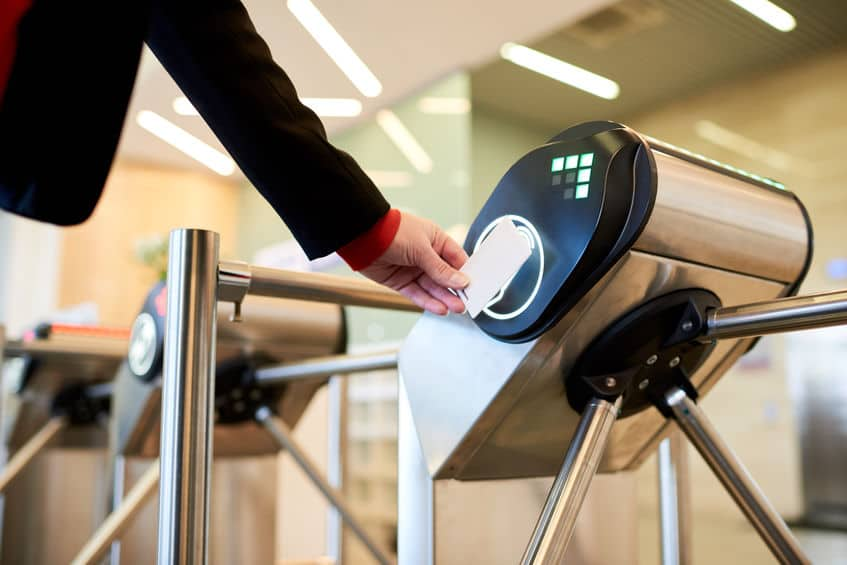

Domande frequenti
Generale
I codici univoci stampati su ogni scheda funzionano come una chiave che consente
l'accesso esclusivo al contenuto digitale dell'audioguida. Il visitatore può
scannerizzare il codice QR per accedere al contenuto oppure, se non ha familiarità con i
QR, inserire un codice alfanumerico sul nostro sito web o sul sito web del museo.
In Nubart abbiamo sviluppato una tecnologia protetta chiamata LWAC (Light-Weight Web Access Control) attraverso la quale l'accesso ai contenuti non è trasferibile.
Grazie a LWAC, il possessore della tessera potrà accedere all'audioguida tutte le volte che lo desidera, sia dal suo cellulare o da un PC, anche mesi o anni dopo la sua visita al museo. Ma la carta non può essere usata da nessun altro.
In questo modo ci assicuriamo che l'audioguida sia commercialmente valida e garantiamo l'alta qualità dei dati che forniamo.
In Nubart abbiamo sviluppato una tecnologia protetta chiamata LWAC (Light-Weight Web Access Control) attraverso la quale l'accesso ai contenuti non è trasferibile.
Grazie a LWAC, il possessore della tessera potrà accedere all'audioguida tutte le volte che lo desidera, sia dal suo cellulare o da un PC, anche mesi o anni dopo la sua visita al museo. Ma la carta non può essere usata da nessun altro.
In questo modo ci assicuriamo che l'audioguida sia commercialmente valida e garantiamo l'alta qualità dei dati che forniamo.

Generalmente, le tracce audio delle nostre audioguide vengono ascoltate in streaming,
quindi solo le tracce effettivamente cliccate consumano dati (generalmente nessun
visitatore ascolta un'audioguida completa). I dati consumati dai brani scelti sono di
0,46 MB al minuto, cinque volte meno dei servizi musicali , come ad esempio di Spotify.
Dato il basso consumo di dati e fintanto che la copertura mobile è buona, non riteniamo indispensabile che il museo disponga della connessione Wi-Fi gratuita per poter offrire le nostre audioguide (dal giugno 2017 i cittadini dell'UE non sono più soggetti alle tariffe di roaming).
Tuttavia, per i casi di connettività complicata (musei che hanno solo Wifi nella zona di ricezione della hall, o tour in luoghi con poca o nessuna copertura dati) abbiamo sviluppato una modalità di utilizzo offline che permette di scaricare nella memoria temporanea del cellulare tutte le tracce audio e senza installare alcuna applicazione. Così, una volta scaricati, possono ancora essere ascoltati in zone senza copertura.
Dato il basso consumo di dati e fintanto che la copertura mobile è buona, non riteniamo indispensabile che il museo disponga della connessione Wi-Fi gratuita per poter offrire le nostre audioguide (dal giugno 2017 i cittadini dell'UE non sono più soggetti alle tariffe di roaming).
Tuttavia, per i casi di connettività complicata (musei che hanno solo Wifi nella zona di ricezione della hall, o tour in luoghi con poca o nessuna copertura dati) abbiamo sviluppato una modalità di utilizzo offline che permette di scaricare nella memoria temporanea del cellulare tutte le tracce audio e senza installare alcuna applicazione. Così, una volta scaricati, possono ancora essere ascoltati in zone senza copertura.
Sì, possiamo creare un layout personalizzato per la vostra azienda in cui potete decidere i colori, il font, il tipo di lettore, gli spazi tra gli elementi, aggiungere una cornice alle immagini...
Questo corporate design è soggetto a un costo aggiuntivo.
Questo corporate design è soggetto a un costo aggiuntivo.
A Nubart ci preoccupiamo per l'ambiente!
Offriamo tre opzioni di carte ecologiche:
Offriamo tre opzioni di carte ecologiche:
- PVC riciclato.
- Carte realizzate con cartone speciale ad alta resistenza, certificato FSC.
Sì, lo sono!
Il QR della scheda è stampato in rilievo, in modo che le persone ipovedenti possano individuarlo con la punta delle dita e scansionarlo facilmente.
Abbiamo sviluppato il CMS che gestisce i nostri contenuti digitali con un design universale cosi che risulti facilmente accessibile.
Troverai maggiori dettagli nel nostro blog (in inglese): Le audioguide nubart sono accessibili
Il QR della scheda è stampato in rilievo, in modo che le persone ipovedenti possano individuarlo con la punta delle dita e scansionarlo facilmente.
Abbiamo sviluppato il CMS che gestisce i nostri contenuti digitali con un design universale cosi che risulti facilmente accessibile.
Troverai maggiori dettagli nel nostro blog (in inglese): Le audioguide nubart sono accessibili
Audioguide
Sappiamo che la maggior parte dei musei sono a corto di personale e hanno un carico di
lavoro molto elevato.
Il nostro obiettivo è quello di prenderci cura di tutto e di ridurre il più possibile tale onere.
Di solito ci servono solo un copione, delle immagini e qualche informazione. Facciamo tutto il resto noi, tenendovi aggiornati sul processo e ottenendo la vostra approvazione durante le diverse fasi di elaborazione.
Che materiale è necessario per produrre la tua audioguida nubart
Il nostro obiettivo è quello di prenderci cura di tutto e di ridurre il più possibile tale onere.
Di solito ci servono solo un copione, delle immagini e qualche informazione. Facciamo tutto il resto noi, tenendovi aggiornati sul processo e ottenendo la vostra approvazione durante le diverse fasi di elaborazione.
Che materiale è necessario per produrre la tua audioguida nubart
Il vostro museo può scegliere qualsiasi modalità di distribuzione, delle schede Nubart
ai suoi visitatori.
Per esempio:
Per esempio:
- Gratuito solo alcuni giorni della settimana per attirare visitatori nei giorni di minor affluenza.
- Promozione gratuita come sponsor.
- Gratuito in quanto coperto dal prezzo del biglietto.
- Convertire l'audioguida nel biglietto d'ingresso utilizzando la nostra opzione biglietto e audio guida.
- Al prezzo di costo per coprire l'investimento effettuato.
- Ad un prezzo superiore al costo per ottenere un profitto.
Il nostro modello più comune è quello di vendere le carte come se fossero un prodotto, ma con quasi tutte le nostre caratteristiche digitali incluse. Potrete fare rifornimento in qualsiasi momento.
Per i posti con molti visitatori e che desiderano includere la scheda audio guida nel prezzo del biglietto, possiamo offrire un contratto forfettario.
E per i musei e altri luoghi con più di 100.000 visitatori all'anno e che desiderano vendere la carta come articolo extra, possiamo considerare un accordo di revenue-share.
Per i posti con molti visitatori e che desiderano includere la scheda audio guida nel prezzo del biglietto, possiamo offrire un contratto forfettario.
E per i musei e altri luoghi con più di 100.000 visitatori all'anno e che desiderano vendere la carta come articolo extra, possiamo considerare un accordo di revenue-share.
Al giorno d'oggi la maggior parte delle persone indossa le proprie cuffie. In caso contrario, i visitatori possono abbassare il volume e, invece di tenere lo smartphone come quando ricevono una telefonata, possono tenere l'altoparlante più basso più vicino all'orecchio. Poiché le audioguide hanno brevi brani che vengono ascoltati separatamente e non continuamente come un audiolibro o una musica, questo non è un problema. Abbiamo diversi clienti che non offrono cuffie con le nostre audioguide.
Ma se ritieni che le cuffie siano essenziali nel tuo museo, possiamo offrirle con piacere e persino personalizzare la confezione con il logo del tuo museo, come vedi qui. ¡Pídenos un presupuesto!

Ma se ritieni che le cuffie siano essenziali nel tuo museo, possiamo offrirle con piacere e persino personalizzare la confezione con il logo del tuo museo, come vedi qui. ¡Pídenos un presupuesto!
Attualmente il nostro sistema supporta le seguenti lingue:
- tedesco
- inglese
- spagnolo
- francese
- italiano
- olandese
- catalano
- basco
- ceco
- danese
- finlandese
- russo
- ungherese
- polacco
- lussemburghese
- bulgaro
- arabo
- Cinese (mandarino)
- giapponese
- thailandese
Biglietto e audio guida tutto in uno
Sì, anche se il nostro sistema di ticketing è gestito direttamente dal vostro browser, senza alcun software aggiuntivo, le vostre ricevute saranno generate in background e inviate direttamente alla vostra stampante termica di ricevute.
Il nostro sistema vi offre una calcolatrice che vi permetterà di inserire diversi visitatori allo stesso tempo, senza perdere tempo a scansionare ogni scheda separatamente. Questi valori sono saranno memorizzati separatamente nel CSV per essere integrati nella vostra contabilità. Quando questo alla carta verranno assegnati un certo numero di accessi. La scheda conterrà altrettanti scorciatoie per l'audioguida come componenti del gruppo. Sullo schermo del smartphone i vostri visitatori vedranno un contatore di utenti per accedere all'audioguida: "9 utenti rimasti", "8 utenti rimasti", ecc.
Potete gestire un elenco di prodotti nella vostra area clienti. Nell'interfaccia del nostro sistema vedrete un pulsante di prodotti in cui potrete scegliere quello desiderato dal vostro cliente. Se l'acquirente dell'articolo non ha bisogno di un biglietto, può semplicemente stampare il biglietto di pagamento invece di dargli una delle nostre carte. Questo addebito sarà automaticamente incorporato nel CSV a fini contabili.
Sì, ogni codice QR è unico e può fornire un accesso controllato a un tornello, come negli aeroporti. Il software del tornello può comunicare con le nostre API e identificare se quel codice appartiene ad un visitatore legittimo. Per prevenire la contraffazione, come la fotocopia del codice della carta per ottenere un biglietto gratuito, la nostra API identificherà se lo stesso codice è stato utilizzato in precedenza e in quali circostanze.
